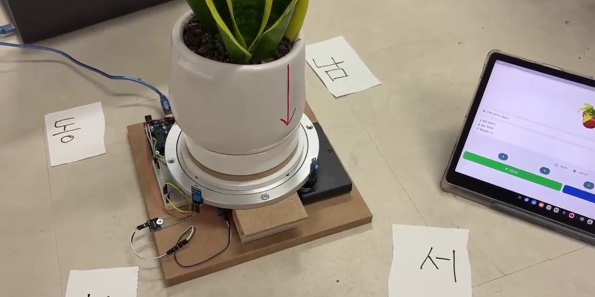

S.P.I.N 스마트 회전 화분
빛이 오는 방향을 찾아 스스로 회전하고, 온·습도와 토양 습도를 스마트폰 앱으로 보내는 화분

PROCESS · 과정
동·서·남·북 4방향 조도 센서 값을 13초마다 비교해 가장 밝은 방향으로 DC 모터가 화분을 돌리도록 설계했습니다. 온·습도와 토양 습도는 1초마다 블루투스(HM-10)로 앱에 보내고, 앱에서 자동/사용자 모드와 방향을 바꿀 수 있게 했습니다.
ROLE · 기여
팀장으로 하드웨어 구축을 맡았습니다. 모터 선정, 풀리·회전판에 맞춘 링 기어 도면 제작과 3D 프린팅, 재료 탐색·구매, 아두이노 코드 일부를 담당했고 논문의 서론과 관련 연구를 작성했습니다.
DECISION · 의사결정
위치 센서 없이 DC 모터로 방향을 맞추기 위해, 기준 방향에서 각 방향까지 도는 시간을 측정해 그만큼만 구동하는 방식(90°에 24초)을 택했습니다. 회전판은 0·90·180·270° 네 방향으로 단순화했고, 블루투스가 끊기면 자동 모드로 돌아가게 했습니다.
RESULT · 결과
시간대별 실험에서 오전 9시대에는 동쪽(90°), 오후 4시대에는 서쪽(270°)으로 회전해 유지되었습니다. 이 연구는 「실내 식물 성장을 위한 자동 회전 기반 스마트 화분 연구」로 스마트미디어저널 14권 11호(2025.11, KCI 등재)에 게재되었습니다.
Arduino C++ · 조도 센서 · DHT11 · HM-10 (BLE) · L298N · 3D 프린팅